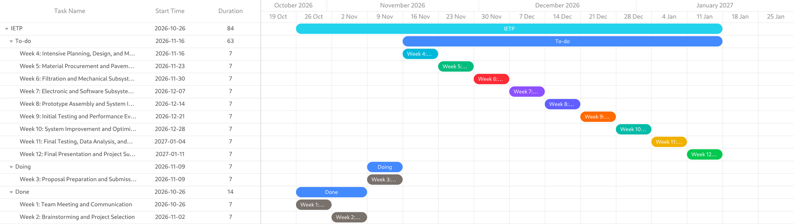

Team Contributions and Weekly Progress
A chronological record of completed foundation activities, engineering decisions, and the planned Semester 1 implementation roadmap.
12-week project shape
Four phases connect team formation to the live prototype demonstration and final submission. The milestone table below retains the date commitments stated in the consolidated report.
Phase 1: formation, selection, and proposal documentation
Weeks 1–3 are documented in the consolidated project report and form the foundation for the prototype phase.
Week 1: Team meeting and communication
Objective: meet team members and establish a clear understanding of the project.
Main activities completed
- Gathered at the office of Advisor Belay Gemeda Edeo and introduced all ten Group 3 members.
- Reviewed the IETP 4115 course objectives, academic deliverables, and advisor expectations.
Key discussions and decisions
- Clarified responsibilities across Civil, Chemical, Environmental, Architectural, Electromechanical, Electrical and Computer, and Software Engineering.
- Established communication channels, shared document repositories, and a regular weekly meeting schedule.
Deliverables achieved
- Formalized the ten-member multidisciplinary team structure and communication charter.
Week 2: Brainstorming and project selection
Objective: generate ideas and select the most suitable multidisciplinary engineering project.
Main activities completed
- Identified and shared candidate engineering project ideas addressing local urban needs in Addis Ababa.
- Evaluated candidates on technical feasibility within one semester, cost, available university laboratory materials, and expected SDG impact.
Key discussions and decisions
- Selected the AquaPave permeable wash-pad concept in consultation with Advisor Belay Gemeda Edeo.
- Finalized the project title and defined the general objective and five specific objectives aligned with SDGs 1, 6, 7, 9, and 11.
Deliverables achieved
- Approved project topic, title, multidisciplinary scope, and central research question.
Week 3: Proposal preparation and submission · Gate 1
Objective: prepare and submit the formal IETP 4115 project proposal and foundational technical analysis.
Main activities completed
- Synthesized peer-reviewed data on Addis Ababa's water supply deficit, urban runoff growth, garage effluent quality, and permeable pavement mechanics.
- Formulated the problem statement, central research question, five-step methodology, quantitative equations, synthetic wash-water recipe, and risk matrix.
- Developed the 12-week work plan, four cross-disciplinary interfaces, and the SDG compliance traceability matrix.
Key discussions and decisions
- Established modular permeable concrete pavers as a critical-path backup if the cast pervious slab underperforms in Week 5.
- Defined manual measurement fallbacks for every electronic sensor in case laboratory instruments are unavailable.
Deliverables achieved
- Consolidated Project Documentation covering Sections 1–4, submitted for Milestone Gate 1.
Phase 2 and 3: planned design, fabrication, testing, and demonstration
Weeks 4–12 are planned activities. They will be marked complete only after the associated milestone gate is verified.
Week 4: Intensive planning, design, and material selection
Objective: finalize the preliminary technical design and prepare for prototype development.
Planned activities
- Develop the overall wash-pad layout, pavement layer thicknesses, filtration section depths, and separator geometry.
- Prepare preliminary block diagrams and technical drawings.
- Identify local suppliers and estimate the budget for cement, aggregate, sand, charcoal, pumice, geotextile, PVC, and frame materials.
- Select water-level and turbidity sensors and plan the ESP32 monitoring circuit and alert architecture.
Verification output
- Design package and bill of materials ready for procurement.
- Sensor and software architecture defined.
Week 5: Material procurement and pavement preparation · Gate 2
Objective: acquire required materials and begin construction of the pavement and filtration components.
Planned activities
- Procure aggregates, cement, filter media, and electronic components.
- Prepare molds and proportion the pervious concrete mix, verifying consistency with the hand-squeeze test.
- Cast the pervious concrete slab and dense control slab, then begin seven-day wet curing.
- Wash, dry, and sieve sand, gravel, charcoal, and pumice; bench-test the ESP32 and sensors.
Verification output
- Cast pervious and control slabs entering wet cure.
- Prepared filter media and initial electronics bench checks.
Week 6: Filtration and mechanical subsystem development · Gate 3
Objective: develop the filtration bed and mechanical containment structure of the prototype.
Planned activities
- Arrange graded filtration layers inside the lined containment box.
- Assemble the slotted PVC underdrain and collection pipes.
- Construct the structural frame, sloped washing tray, baffled oil separator, and reuse tank; connect the drainage plumbing.
- Inspect curing slabs and submit the progress report with the verified synthetic wash-water recipe.
Verification output
- Gate 3 progress report due 4 December 2026.
- Documented wastewater characterization and synthetic recipe.
Week 7: Electronic and software subsystem development
Objective: develop the sensor-based monitoring and clogging alert system.
Planned activities
- Connect the ESP32 microcontroller to the water-level and turbidity sensors.
- Build the regulated electrical or solar power arrangement.
- Write the initial embedded program for sensor acquisition, filtering, and timestamped logging.
- Implement the hydraulic clogging detection algorithm and maintenance alert functions.
Verification output
- Working firmware prototype and sensor logging workflow.
- Initial clogging alert logic ready for integration.
Week 8: Prototype assembly and system integration · Gate 4
Objective: combine pavement, filtration, mechanical, electronic, and software subsystems into one working prototype.
Planned activities
- Mount the cured pervious slab over the filtration bed and seal the perimeter edges.
- Install and seal the underdrain, baffled oil separator, and reuse tank.
- Integrate waterproofed sensor probes and the ESP32 enclosure.
- Upload and test the data-logging and alert software; run a one-hour leak test.
Verification output
- Fully assembled, leak-tested prototype.
- Active ESP32 sensor logging across all subsystems.
Week 9: Initial testing and performance evaluation
Objective: evaluate the initial hydraulic and treatment performance of the AquaPave prototype.
Planned activities
- Conduct baseline clean-water infiltration tests and initial synthetic wash-water trials.
- Compare drainage and runoff against the dense concrete control slab.
- Measure turbidity, TSS, and visual oil removal across stages.
- Check sensor accuracy and stability; identify edge leakage, media blockage, or emulsified oil carryover.
Verification output
- First-stage hydraulic and treatment dataset.
- Issue log used for Week 10 optimization.
Week 10: System improvement and optimization
Objective: improve prototype performance and reliability based on Week 9 results.
Planned activities
- Correct leaks, drainage bottlenecks, or structural issues observed during testing.
- Optimize charcoal and pumice layer arrangement or thickness if needed.
- Adjust sensor calibration curves and software clogging alert thresholds.
- Improve separator baffles and reuse collection piping; repeat selected tests.
Verification output
- Revised prototype configuration and calibration records.
- Repeat test results confirming performance improvements.
Week 11: Final testing, data analysis, and documentation
Objective: verify overall system performance in triplicate and prepare final project documentation.
Planned activities
- Conduct final triplicate infiltration, filtration, and accelerated soil-clogging and cleaning-recovery tests.
- Evaluate non-potable reuse compliance and daily water savings.
- Analyze removal efficiencies, runoff coefficients, and clogging ratios; prepare tables, graphs, and prototype photographs.
- Write, edit, and review the comprehensive final engineering report.
Verification output
- Final experimental dataset and performance figures.
- Draft final engineering report ready for review.
Week 12: Final presentation and submission · Gates 5 and 6
Objective: present the completed AquaPave project and submit all required final documentation.
Planned activities
- Complete the final report and presentation slides.
- Prepare the physical prototype and synthetic wash-water batch for a live demonstration.
- Rehearse the presentation with all ten team members.
- Present results and the live demonstration to the advisor and evaluation panel; submit the final report and materials.
Verification output
- Gate 5 live demonstration: 30 December 2026.
- Gate 6 final submission: 1 January 2027.
- Complete final engineering report, feasibility and payback analysis, and SDG compliance audit.
Milestone summary and deliverable gates
Six formal gates govern the 12-week execution cycle. Each gate has a lead discipline group and a required verification output.
| Milestone gate | Schedule window | Lead disciplines | Required verification output |
|---|---|---|---|
| Gate 1: Proposal approval | Week 3 · November 2026 | All seven disciplines | Submitted and advisor-approved IETP 4115 project proposal and 12-week plan. |
| Gate 2: Concrete casting and curing | Week 5 · November 2026 | Civil and Architectural Engineering | Cast pervious concrete slab and dense control slab entering seven-day wet cure. |
| Gate 3: Progress report | Week 6 · 4 December 2026 | Environmental and Chemical Engineering | Documented wastewater characterization and verified synthetic wash-water recipe. |
| Gate 4: Integrated prototype | Week 8 · Mid-December 2026 | Electromechanical, Electrical and Computer, and Software Engineering | Fully assembled, leak-tested prototype with active ESP32 sensor logging. |
| Gate 5: Live demonstration | Week 12 · 30 December 2026 | All seven disciplines | Live treatment demonstration achieving at least 80% turbidity reduction and zero oil sheen. |
| Gate 6: Final submission | Week 12 · 1 January 2027 | All seven disciplines | Complete final engineering report, feasibility and payback analysis, and SDG compliance audit. |
Planning snapshot: interactive Gantt worksheet
The worksheet below is the working planning snapshot used by the team. Where the worksheet and the consolidated report differ, the milestone dates in the report and the gate table above govern.
